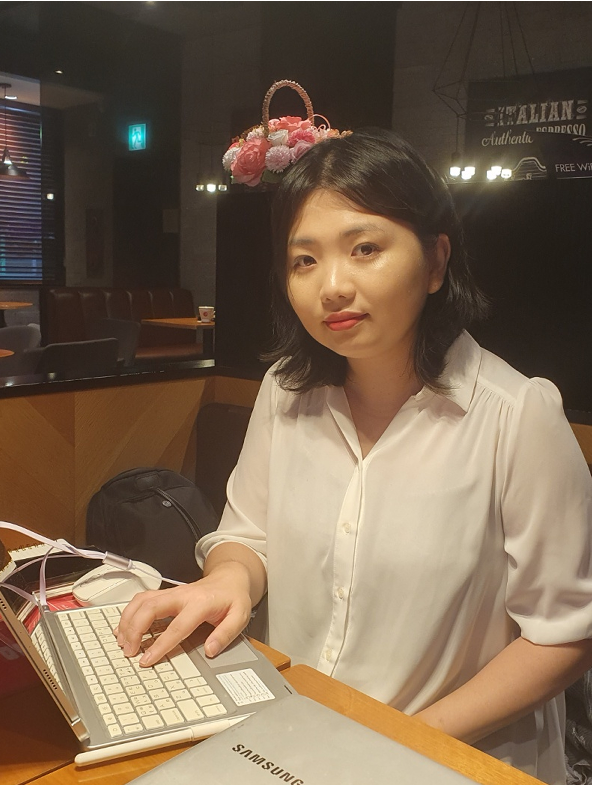

(주)수인터내셔날 여성의류 매장 보조 및 판매
백화점 매장에서는 고객의 니즈를 빠르게 파악해 전달하는 훈련을 하였습니다.
Concept
Development
구체적인 설계가 있는 명확한 컨셉을 만듭니다.
화려한 표현보다, 사용자의 흐름과 선택에 집중하며
더 나은 경험을 위한 디자인을 설계합니다.
디자인은 사용자가 복잡한 흐름 속에서도 명확하게 목적에 도달할 수 있도록, 감정과 구조의 흐름을 설계합니다.
불필요한 요소를 덜어내고 핵심만을 남겨 정보와 구조를 조화롭게 설계하는 것을 추구합니다.
브랜드의 진심이 경험으로 이어지길 바랍니다.
Reading Emotions,
Designing Thoughtful Flow

What kind of Designer I am
저는 디자인을 시작하기 전, 항상 ‘왜’라는 질문으로 사용자의 감정과 흐름을 읽습니다.
그 이해를 바탕으로 필요한 구조를 짜고, 따뜻한 감성과 디테일을 더합니다.
정돈된 화면과 자연스러운 흐름, 의미 있는 선택이 저의 디자인입니다.
PRACTICE
실제 수치로 증명하는 디자이너
사용자의 맥락을 고려한 리디자인은 단순히 화면을 바꾸는 것이 아닙니다.
사용자 경험을 중심으로 콘텐츠와 흐름을 재배치하고, 시각적 연결감을 높이는 것이 핵심입니다.
실제 사용 장면과 니즈를 반영해 설계된 화면은 깊은 몰입감을 제공합니다.
사용자와 브랜드 사이, 연결을 만들어내는 디자인
사람을 이해하고 관계를 설계하는 시선을 담아
익숙하고 편안한 경험이 자연스럽게 이어지도록 고민합니다

사용자가 어떤 목적과 기대를 가지고 이 화면을 마주하는 맥락을 이해하며 설계를 시작합니다.
그 흐름에 맞춰 시선과 동선이 자연스럽게 이어질 수 있도록 세심하게 레이아웃을 설계합니다.
기능과 정보 간의 관계를 분석하고, 불필요한 요소는 줄여 핵심 메시지 전달에 더욱 집중시켰습니다.
그 결과 사용자는 고민 없이 다음 행동을 선택할 수 있게 됩니다.
PURPOSE-DRIVEN INTERFACE STRUCTURE
모든 사용자는 제품을 처음 마주하는 순간, 어디를 보고 어떻게 시작해야 할지 판단하게 됩니다.
저는 그 첫 경험이 불필요한 고민 없이 자연스럽게 이어질 수 있도록 흐름과 간격을 설계했습니다.
기능은 단순하게 유지하되, 시선의 흐름 안에서 사용자가 다음 행동을 쉽게 선택하도록 했습니다.
정보의 우선순위와 이동 경로를 명확히 나누는 구조 정리는 사용자 경험의 핵심이라 생각합니다.
85 %
Focused on First-Time Users
100%
Mobile-Friendly Layout Ratio

SPATIAL DESIGN THAT SERVES INTENTION
처음 화면에 진입한 사용자가 다음 행동을 고민하지 않도록, 흐름을 끊지 않는 구조를 설계했습니다.
기능별 위치는 우선순위에 따라 반복 조정하고, 인지 속도와 시선의 이동 경로까지 고려했습니다.
의미 없이 배치된 구성은 제거하고, 작은 버튼 하나에도 명확한 목적과 논리를 담아 정리했습니다.
디자인은 단순한 배치가 아니라, 사용자 행동을 유도하는 설계라는 관점에서 접근했습니다
120 px
Minimum Touch Target Height
3.5 s
Avg Page Context Recognition Time
STRUCTURED VISUAL SYSTEM FOR SCALABILITY
모든 사용자가 콘텐츠를 쉽게 읽을 수 있도록, 텍스트의 크기와 간격을 기준에 맞게 설계했습니다.
행간이나 자간이 너무 좁거나 넓으면 흐름이 끊기기 때문에 시각 균형을 맞추는 데 집중했습니다.
긴 문장이나 콘텐츠에서도 시선이 자연스럽게 이동하도록 줄 간격과 패딩을 정밀하게 설계했습니다.
읽는 속도와 인지의 명확성을 높이는 조형은 전체 사용자 경험을 편안하게 만듭니다.
100 %
Grid-based Layout
180 %
Scalable Design Logic
내가 주로 활용하는 디자인 & 코딩 툴들입니다. UI 작업, 설계, 개발까지 전 과정을 직접 다룹니다.
Illustrator
로고·아이콘 등 실무 중심
벡터 디자인 설계 가능
Development Focus
자유곡선/패턴 활용 확장
Photoshop
웹 시안과 콘텐츠 디자인을 위한
고급 편집과 색보정 역량
Development Focus
합성/톤 매치 감각 강화

Figma
오토레이아웃과 그룹 정리로 사용자
흐름을 고려한 UI 레이아웃 설계
Development Focus
컴포넌트·디자인 시스템 역량 강화
VS Code
생산성 높은 코드 관리와 폴더
구조 설계
Development Focus
Git·터미널 활용 확대
HTML5
시멘틱 구조 설계와 접근성을
고려한 클린 마크업
Development Focus
ARIA 활용 심화
CSS3
반응형·애니메이션을 활용한 모던
스타일 구현
Development Focus
SCSS·변수 관리 최적화
생각을 결과로 만드는 과정을 보여드립니다
구체적인 설계가 있는 명확한 컨셉을 만듭니다.
문제를 올바르게 정의하고 정보를 정리합니다.
완성도 높은 결과로 전달합니다.
다양한 가능성을 탐색하고 아이디어를 구체화합니다.
지원 과정과 생각을 FAQ로 정리했습니다.